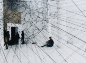

Current Exhibition
Curtains can float. (Michael Jo, 2021)
- Anything
can
float. - Group Exhibition
- April 1, 2023 - April 20, 2023
- Book tickets
- Exhibition
- There is something interesting about large-scale artistic creations exhibited above the ground: it greatly awes the audience and makes the artistic work seem more significant. Anything Can Float is a group exhibition by six contemporary artists that explore how the physical exhibition of artistic objects affects how the art is received. Artists differ in the materials they used for their work as well as how they designed their work to float, but have a common theme of using ordinary objects that would seem rather normal on its own.
Events
MoreCollection

- MOIA has over a hundred-twenty artistic works that are part of the gallery’s permanent collection. With over fifty different contributing artists, the permanent collection involves works that vary in genre and medium, materials used, and delivery. MOIA does not present all works of the permanent collection on site. A number of certain works are curated based on the date of creation and presented together for a period of one month, then proceeding to the next group of works; this is a strategy aimed to showcase all the great works that MOIA carries.
- See all
News & Reads
-
Experiencing Art Through Virtual & Augmented Realities | Feb 28, 2023 | By John Ku
John K. explores the idea of experiencing the art world through the lenses of modern day technology and how this idea contributes to understanding the meaning of modern art and artistic experience. Read now!
-

What is Installation Art? | Feb 15, 2023 | Tim J.
Considered a more recent genre of art, contemporary artists continue to explore what installation art is defined as and what constitutes such genre (as well as what does not). Read now!
-
Autobiography of G. G. Han, MOIA Artist in Residency | Jan 30, 2023 | Kim L.
The artist life of G. G. Han, MOIA Artist in Residency. Her artistic genre is complicated to define, but prominent. How she became an artist is a story that may stun you and help you understand the works that she create. Read now!
-
Realism and Contemporary Installation: Challenges | Dec 23, 2022 | Una Wo
Contemporary installation art often times mimic realistic objects and questions whether the matter at hand is a genre or simply a recreation of what exists. Critics differ in their views in such a debate. Read now!